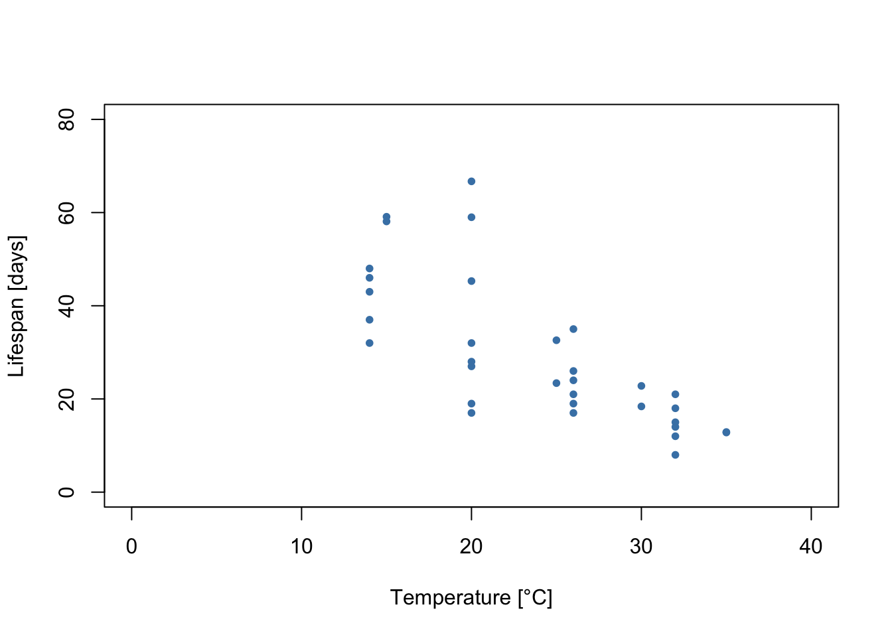
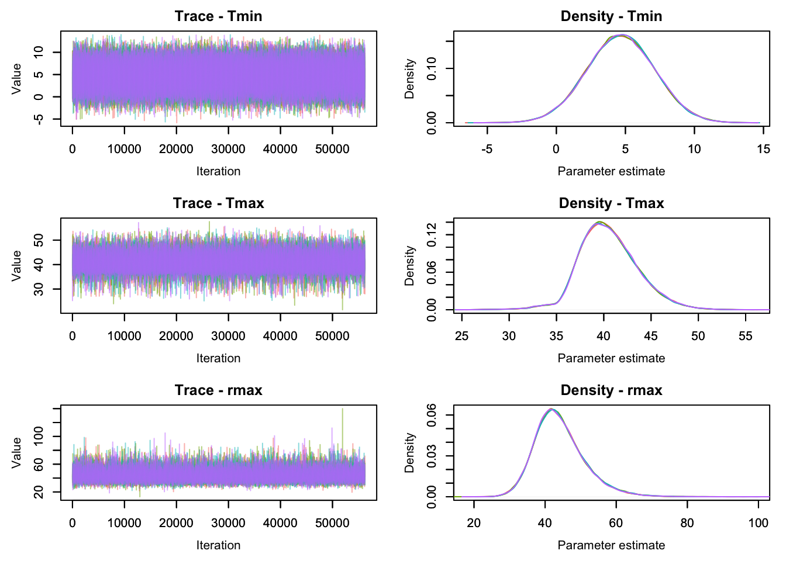
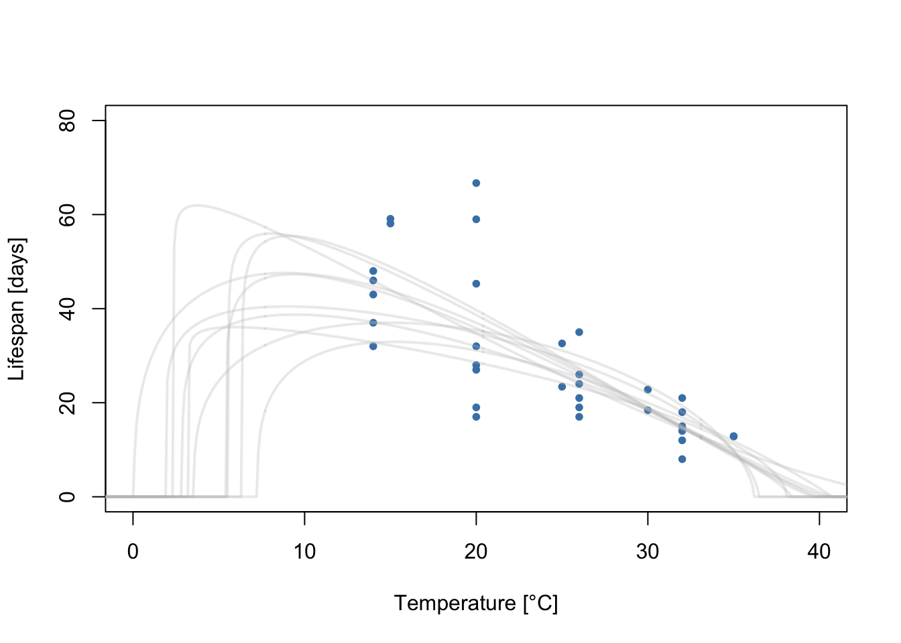
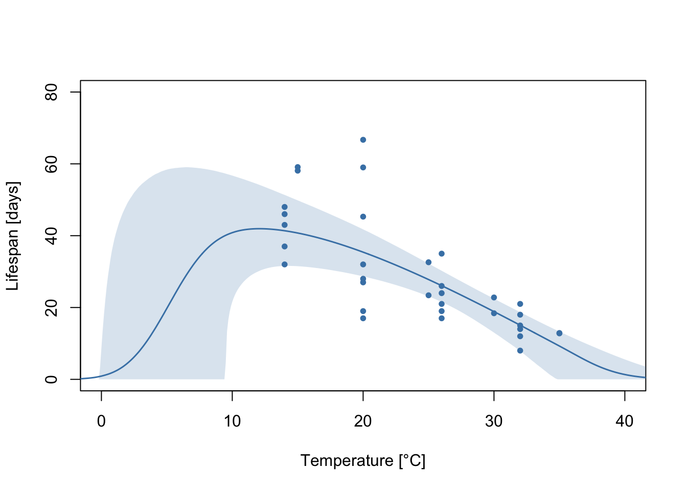
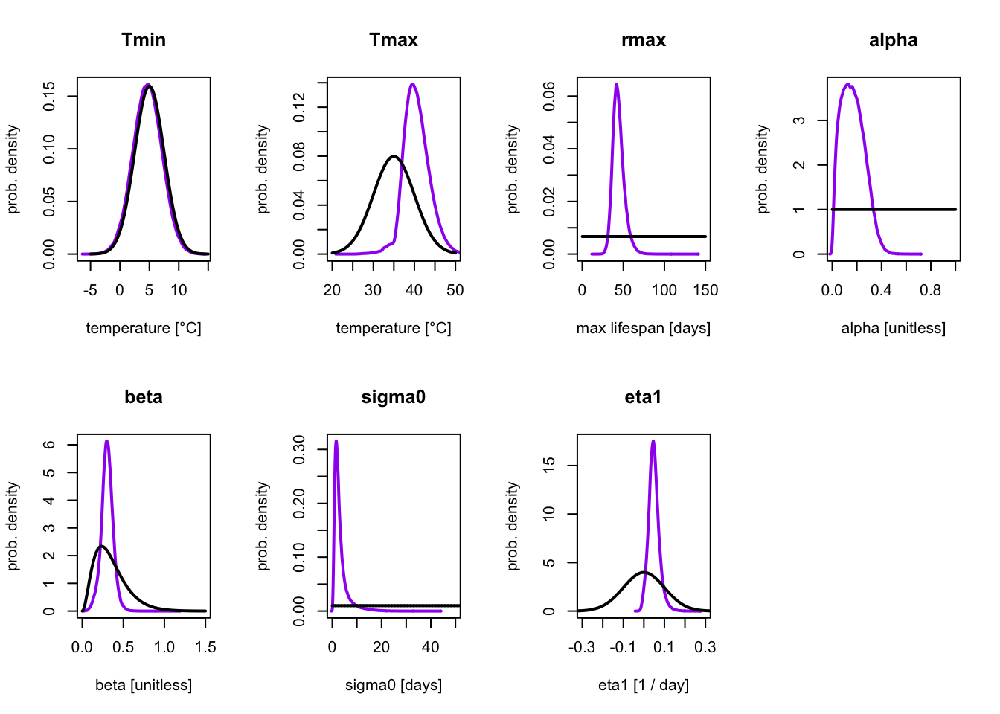

# FlexTPC model for thermal performance curves.
# (parametrized with alpha/beta)
flexTPC <- function(temp, Tmin, Tmax, rmax, alpha, beta) {
s <- alpha * (1 - alpha) / beta^2
result <- rep(0, length(temp))
Tidx = (temp > Tmin) & (temp < Tmax)
result[Tidx] <- rmax * exp(s * (alpha * log( (temp[Tidx] - Tmin) / alpha)
+ (1 - alpha) * log( (Tmax - temp[Tidx]) / (1 - alpha))
- log(Tmax - Tmin)) )
return(result)
}Bayesian inference
In this example, we will fit data on the lifespan of Culex tarsalis mosquitoes with Bayesian methods. Bayesian approaches make it possible to use external information in the form of prior distributions to inform parameter estimates.
As before, let’s start by plotting the data.
lf.data <- read.csv('./mosquito_traits/TraitData_lf.csv')
# Let's filter only the data for female mosquitoes.
Ctar.lf.data <- subset(lf.data, (lf.data$host.code == 'Ctar') &
(lf.data$Trait == 'Female'))
plot(Ctar.lf.data$T, Ctar.lf.data$trait, xlim=c(0, 40), ylim=c(0, 80), xlab='Temperature [°C]',
ylab='Lifespan [days]', pch=20, col='steelblue')
We can see a few things from this plot:
Lifespan increases at lower temperatures throughout the measured range. However, this cannot continue indefinitely, as eventually temperatures will be too low for the mosquitoes to survive. The lowest temperature that mosquitoes can survive is unlikely to be much lower than 0°C (the freezing point of water). Thus, the thermal performance curves for lifespan are likely left-skewed.
It looks like the variability in the data is not constant throughout. Rather, there is greater variability in the measurements at temperatures where lifespan is higher. In this tutorial, we will show how this can be accounted for with a model for the variance.
A Bayesian statistical model
As before, we also need to define the likelihood of our model. In this example we will use the model
\[y_i | T_i, \mathcal{P}, \sigma \sim \mathrm{Gamma}(\mu=r(T_i;P), \sigma)\] where \(y_i\) is the ith observed data point, \(T_i\) the temperature corresponding to this data point, and \(r(T_i;P)\) is the flexTPC equation with parameters \(\mathcal{P}=\{T_\min, T_\max, r_\max, \alpha, \beta \}\). In this case we have no data with zero values, so we will simplify the model and not consider this an additional case (as we did in the MLE example).
As before, to account for the standard deviation \(\sigma\) varying with temperature, we have the following model:
\[\ln \sigma = \eta_0+\eta_1 r(T_i; P)\] which we can rewrite as
\[\sigma = \sigma_0e^{\eta_1 r(T;P)}\] where we can define \(\sigma_0=e^{\eta_0}\).
Prior distributions
In Bayesian statistics, we represent parameter uncertainty with probability distributions. Rather than considering what happens under hypothetical repeated experiments, we are concerned with estimating the probability that the model parameters have different values.
A Bayesian analysis starts by choosing a prior distribution for every model parameter that represents the initial uncertainty in these parameters (before seeing any data). In the analysis these prior distributions are updated to a posterior distribution that represents the remaining uncertainty in the analysis after considering which parameter values are compatible with the data (through the likelihood).
For the rationale of choosing the priors of this model, please check Appendix S1 of the manuscript. We also give general advice on how to choose prior distributions for the flexTPC model in a separate page.
\[T_\min \sim \mathrm{Normal}(\mu=5\mathrm{°C}, \sigma=2.5\mathrm{°C})\] \[T_\max \sim \mathrm{Normal}(\mu=35\mathrm{°C}, \sigma=5\mathrm{°C})\] \[r_\max \sim \mathrm{Uniform}(0, 150)\] \[\alpha \sim \mathrm{Uniform}(0, 1)\] \[ \beta \sim \mathrm{Gamma}(\mu=0.35, \sigma=0.2) \] We also need to choose priors for the parameters that relate to the statistical model. We will choose the following noninformative priors:
\[\sigma_0 \sim \mathrm{Uniform}(0, 100)\]
\[\eta_1 \sim \mathrm{Normal}(\mu=0, \sigma=1)\]
Implementing the model
We will start by importing some necesary packages (these need to be installed before use).
library('R2jags')
library('mcmcplots')
library('MCMCvis')
library('scales')The main R package we’ll be using is \(\texttt{R2jags}\). This package lets us run a program that implements Bayesian inference called JAGS (Just Another Gibbs Sampler) from R.
The first step to implement our model is to write it in a form that can be understood by JAGS. We can do this within R with the \(\texttt{cat}\) function, which can save its output to a text file. This text file will then be read by JAGS.
JAGS has its own probabilistic programming language which looks very similar to how we defined the model earlier. A file that implements our model is shown below:
cat("
model{
## Prior distrivutions.
Tmin ~ dnorm(5, 1/2.5^2) # Note that the sd is input as the precision.
Tmax ~ dnorm(35, 1/5^2)
rmax ~ dunif(0, 150)
alpha ~ dunif(0, 1)
beta ~ dgamma(0.35^2 / 0.2^2, 0.35 / 0.2^2)
sigma0 ~ dexp(1 / 50)
eta1 ~ dnorm(0, 1 / 0.1^2)
# Derived quantities
s <- alpha * (1 - alpha) / beta^2
Topt <- alpha * Tmax + (1 - alpha) * Tmin
B <- beta * (Tmax - Tmin)
## Likelihood
# For each observation i.
for(i in 1:N.obs){
# Mean is flexTPC model at temperature of observation.
mu[i] <- (Tmax > temp[i]) * (Tmin < temp[i]) * rmax * exp(s * (alpha * log( max(temp[i] - Tmin, 10^-20) / alpha)
+ (1 - alpha) * log( max(Tmax - temp[i], 10^-20) / (1 - alpha))
- log(Tmax - Tmin)) )
# Standard deviation varies with performance according to our model.
sigma[i] <- sigma0 * exp(eta1 * mu[i])
# Defines our observation
#y[i] ~ dgamma(mu[i]^2 / sigma[i]^2, mu[i] / sigma[i]^2)
y[i] ~ dnorm(mu[i], 1 / sigma[i]^2)T(0,)
}
} # close model
",fill=TRUE, file="lifespan.txt")There are a few things we need to be aware of when writing a model into JAGS:
Normal distributions in JAGS are parametrized in terms of the mean \(\mu\) and the precision \(\tau = 1 / \sigma^2\) instead of the mean and standard deviation \(\sigma\). So we’ll have to convert our standard deviations or variances to precisions when inputting normal distributions into JAGS.
Gamma distributions in JAGS are parametrized in terms of the shape \(a\) and the rate \(b\). We can convert a mean and standard deviation to a shape and rate by taking \(a = \mu^2 / \sigma^2\) and \(b = \mu / \sigma^2\).
We can define any quantity that is a deterministic function of the model parameters in JAGS. This allows us to easily get credible intervals from these quantities. We do this in the derived quantities section to calculate \(T_\mathrm{opt}\) and \(B\).
The likelihood for each observation \(y_i\) inside a for loop. In this loop we iterate over all observations and calculate what the mean and standard deviation of the Gamma distribution should be according to our model.
The posterior distribution
The main goal in a Bayesian analysis is to obtain the posterior distribution of the parameters. This corresponds to the remaining uncertainty in the parameters after seeing the data. The prior distribution and the likelihood are combined to obtain the posterior distribution with Bayes’s Theorem:
\[p(\theta | y) = \frac{p(y|\theta) p(\theta)}{p(y)} \]
\[\mathrm{posterior} \propto \mathrm{prior} \times \mathrm{likelihood} \]
Bayesian inference with MCMC methods
Now that we’ve written down our model (priors and likelihood) in the JAGS language, we can proceed to running the analysis. JAGS implements a Gibbs sampler, which is a form of Markov Chain Monte Carlo (MCMC), an algorithm that allows us to get samples from the posterior distribution of a Bayesian statistical model. Explaining how MCMC methods work in detail is beyond the scope of this tutorial. However, we provide a simplified explanation here to aid understanding of the process of fitting a Bayesian model (and to better understand the code below):
- We start with initial guesses for the model parameters. This is considered the first value of the MCMC chain.
- The Gibbs sampling algorithm then decides a random new value for the model parameters based on their current value, the model likelihood and the priors. This algorithm is cleverly set up so that in the long run, the distribution of parameters of the chain will correspond to draws from the posterior distribution of our model.
- We run the Gibbs sampling algorithm iteratively with the updated values, saving the values the parameters take at each iteration. Eventually, if we run the chain long enough, the MCMC chain will converge to its equilibrium distribution (which corresponds to the posterior distribution).
- After convergence, we the samples from the MCMC chain are samples from the posterior distribution of our model. We can use these samples to calculate summaries of this distribution (like means and credible intervals for the individual parameters).
MCMC is only guaranteed to sample from the posterior distribution in the long run. Because of this, it is important to a) run the chains for a large number of iterations, and b) check for signs that the chains may not have yet converged, as in that case we cannot trust the results.
It is usually a good idea to run multiple MCMC chains with different starting values. Once the chains have converged, they should be drawing samples from the same distribution (the posterior). We can examine plots of the multiple MCMC chains to see if they look similar as an informal check if they converged. We can also check some convergence criteria that are based on statistical comparisons of the variability between and within chains.
In this example, we will run four independent MCMC chains. We will choose the initial values of the MCMC chains by drawing these values randomly (but within specified ranges). In this example, we will run the chains for 500000 iterations. We often want to discard some of the initial iterations (a burn-in period), since it is likely that the chains have not yet converged in early iterations We will save only one out of every eight iterations to save some memory. Optionally, we can discard some of the iterations to save some memory.
# Set random seed for reproducibility.
set.seed(42)
##### Set MCMC settings
# Number of posterior dist elements = [(ni - nb) / nt ] * nc = [ (25000 - 5000) / 8 ] * 3 = 7500
nc <- 4 # number of MCMC chains
ni <- 500000 # number of iterations in each chain
nb <- 50000 # number of 'burn in' iterations to discard
nt <- 8 # thinning rate - jags saves every nt iterations in each chain
#### Recipe for choosing initial values for MCMC (so each chain starts at different values).
inits<-function(){list(
Tmin = runif(1, min=2.5, max=7.5),
Tmax = runif(1, min=35, max=40),
rmax = runif(1, min=0, max=150),
alpha = runif(1, min=0.2, max=0.8),
beta = runif(1, min=0.2, max=0.7),
sigma0 = runif(1, min=0, max=50),
eta1 = runif(1, min=-0.1, max=0.1))}
##### Parameters to save from MCMC chains.
parameters <- c("Tmin", "Tmax", "rmax", "alpha", "beta", 's', "Topt", "sigma0", "eta1")Note that what we have in \(\texttt{inits}\) is different than the prior distributions. The purpose of this code is to choose the initial values of our MCMC chains randomly. In principle, we could choose any starting values, but in practice things work better (i.e. the MCMC chains will converge faster) if the initial values are plausible parameter values for describing the data.
Now that we have defined the relevant MCMC settings, we can organize the data and fit the model.
##### Organize Data for JAGS
y <- Ctar.lf.data$trait
temp <- Ctar.lf.data$T
N.obs <- length(y)
##### Bundle Data
jag.data <- list(y=y, temp = temp, N.obs=N.obs)
jags.out <- jags(data=jag.data, inits=inits, parameters.to.save=parameters,
model.file="lifespan.txt", n.thin=nt, n.chains=nc,
n.burnin=nb, n.iter=ni, DIC=TRUE, working.directory=getwd())module glm loadedCompiling model graph
Resolving undeclared variables
Allocating nodes
Graph information:
Observed stochastic nodes: 33
Unobserved stochastic nodes: 7
Total graph size: 286
Initializing modelThe previous code ran an MCMC algorithm to sample from the posterior distribution of our model. We can look at the values of the first few iterations of our MCMC chain.
chains <- MCMCchains(jags.out, params = c('Tmin', 'Tmax', 'rmax', 'alpha', 'beta', 'Topt',
'sigma0', 'eta1'))
head(chains) Tmin Tmax rmax alpha beta Topt sigma0
[1,] 5.679186 38.93609 50.58937 0.06088373 0.2594664 7.703991 1.205484
[2,] 5.059177 41.68388 36.53974 0.25604239 0.2992110 14.436655 5.137441
[3,] 3.395206 41.79350 40.90831 0.18941846 0.3262908 10.668552 2.263047
[4,] 10.002884 42.45772 30.98153 0.08614849 0.2899040 12.798819 1.448849
[5,] 3.062419 37.59707 40.72979 0.43290347 0.3023225 18.012588 20.156065
[6,] 3.389629 43.43354 54.49044 0.05553694 0.2025542 5.613545 6.219664
eta1
[1,] 0.064093208
[2,] 0.023128628
[3,] 0.059832411
[4,] 0.090174379
[5,] -0.009103983
[6,] 0.023000565Each row here corresponds to one MCMC iteration. If the MCMC chains have converged, it also corresponds to one sample from the posterior distribution of our model parameters, which describes the remaining uncertainty in these parameters after the analysis.
As an informal graphical check for convergence, we can look at a traceplot of our four independent MCMC chains, which shows the values of the parameters at each iteration. If the chains have converged, these four chains should be drawing samples from the same distribution and should look very similar to each other. Let’s look at the values for some model parameters.
MCMCtrace(jags.out,
params = c('Tmin', 'Tmax', 'rmax'),
ISB = FALSE,
iter=225000, # Plot all saved traces.
exact = TRUE,
ind=TRUE,
pdf = FALSE)
Here the values of our four chains are plotted with different colors. The left plots are traceplots that show the value of the parameters at each iteration of our four MCMC chains (each shown in a different color). If the chains look systematically different from each other, it indicates that they are not yet drawing from the same distribution, making it likely that the chains have not yet converged. An MCMC chain that has converged usually looks like a “fuzzy caterpillar” (like the plots above).
The plots on the right show a density plot (i.e. essentially a smoothed histogram) of the values of our individual MCMC chains. These plots estimate the posterior distribution of the model parameters, provided the MCMC chains have converged. If the distribution from samples from different chains look different from each other, this indicates that the chains have not yet converged. When running an MCMC algorithm, these plots should always be checked (for all parameters of interest, although we only show these three here) before trusting the results. One convenient way to do this is the function
mcmcplot(jags.out)
Preparing plots for Tmax. 10% complete.
Preparing plots for Tmin. 20% complete.
Preparing plots for Topt. 30% complete.
Preparing plots for alpha. 40% complete.
Preparing plots for beta. 50% complete.
Preparing plots for deviance. 60% complete.
Preparing plots for eta1. 70% complete.
Preparing plots for rmax. 80% complete.
Preparing plots for s. 90% complete.
Preparing plots for sigma0. 100% complete.which can show traceplots and density plots for all parameters in a web browser (this won’t work in this tutorial, but you can run this if you are following along).
After inspecting the chains and finding no obvious issues, we can now look at a summary of our analysis.
jags.outInference for Bugs model at "lifespan.txt", fit using jags,
4 chains, each with 5e+05 iterations (first 50000 discarded), n.thin = 8
n.sims = 225000 iterations saved
mu.vect sd.vect 2.5% 25% 50% 75% 97.5% Rhat n.eff
Tmax 40.527 3.116 34.900 38.455 40.291 42.421 47.181 1.001 200000
Tmin 4.668 2.464 -0.174 3.010 4.673 6.336 9.491 1.001 220000
Topt 10.729 3.623 3.579 8.131 10.859 13.493 17.060 1.001 110000
alpha 0.168 0.092 0.023 0.094 0.161 0.233 0.358 1.001 180000
beta 0.304 0.073 0.154 0.260 0.303 0.348 0.449 1.001 61000
eta1 0.049 0.026 0.002 0.032 0.047 0.064 0.109 1.001 36000
rmax 44.169 7.169 32.433 39.288 43.299 48.105 60.766 1.001 34000
s 1.436 0.678 0.590 0.978 1.290 1.729 3.099 1.001 220000
sigma0 3.260 2.957 0.602 1.520 2.368 3.834 12.025 1.001 38000
deviance 239.331 4.599 233.349 235.978 238.308 241.593 250.986 1.001 120000
For each parameter, n.eff is a crude measure of effective sample size,
and Rhat is the potential scale reduction factor (at convergence, Rhat=1).
DIC info (using the rule, pD = var(deviance)/2)
pD = 10.6 and DIC = 249.9
DIC is an estimate of expected predictive error (lower deviance is better).This contains the posterior mean (\(\texttt{mu.vect}\)) and standard deviation (\(\texttt{sd.vect}\)), as well as the 2.5%, 25%, 50% (median), 75% and 97.5% quantiles of the posterior distribution for each model parameter and generated quantity. A 95% credible interval can be contructed from the 2.5% and 97.5% quantiles.
This summary also contains some MCMC diagnostics that can be useful to detect nonconvergence. The Gelman-Rubin statistic \(\hat{R}\) is a convergence diagnostic that compares the variability within and across the different MCMC chains. If the MCMC chains have converged Rhat should be very close to one. One rule of thumb is that we should only use samples for which \(\hat{R}<1.01\) for all parameters of interest.
The samples of an MCMC chain are usually correlated. The effective sample size \(n_\mathrm{eff}\) is an estimate of how many independent samples would be equivalent to the (non-independent) samples that we have from our chains. One rule of thumb is that ideally we want \(n_\mathrm{eff} \approx 10000\) or higher if we want to estimate a 95% credible interval for a parameter. Having low \(n_\mathrm{eff}\) after many iterations often indicates an issue with the model and/or MCMC convergence issues.
Each MCMC iteration corresponds to a draw from the posterior distribution of the model parameters. As the model parameters define a flexTPC curve, each iteration can also be interpreted as a sample from the posterior distribution of flexTPC curves that could plausibly describe the data. Let’s plot a few of these TPCs samples from the posterior:
temps <- seq(-5, 45, 0.1)
chains <- MCMCchains(jags.out, params=c("Tmin", "Tmax", "rmax", "alpha", "beta"))
curves <- apply(chains, 1, function(x) flexTPC(temps, x[1], x[2], x[3], x[4], x[5]))
# Sample 10 curves from posterior distribution
sample.idx <- sample(1:225000, 10)
plot(Ctar.lf.data$T, Ctar.lf.data$trait, xlim=c(0, 40), ylim=c(0, 80), xlab='Temperature [°C]',
ylab='Lifespan [days]', pch=20, col='steelblue')
for(i in 1:10) {
lines(temps, curves[, sample.idx[i]], col=alpha("grey", 0.3), lwd=2)
}
Each gray line corresponds to a flexTPC curve that could plausibly describe this data. We usually want to summarize these posterior samples. We can do this by taking the mean and a 95% credible interval at each temperature from a large number of samples of these TPCs. Let’s do this and plot it with the data.
meancurve <- apply(curves, 1, mean)
CI <- apply(curves, 1, quantile, c(0.025, 0.975))
plot(Ctar.lf.data$T, Ctar.lf.data$trait, xlim=c(0, 40), ylim=c(0, 80), xlab='Temperature [°C]',
ylab='Lifespan [days]', pch=20, col='steelblue')
lines(temps, meancurve, col="steelblue", lwd=1.5, type='l')
polygon(c(temps, rev(temps)), c(CI[1,], rev(CI[2,])),
col=alpha("steelblue", 0.2), lty=0)
We can compare the prior and posterior distribution for each parameter to see how the data changed the uncertainty.
par(mfrow=c(2, 4))
posterior.col = "purple"
# Tmin
temps <- seq(-5, 15, 0.1)
plot(density(MCMCchains(jags.out, params=c("Tmin"))), lwd=2, col=posterior.col,, type='l', main='Tmin',
xlab='temperature [°C]', ylab='prob. density')
lines(temps, dnorm(temps, mean=5, sd=2.5), lwd=2)
# Tmax
temps <- seq(20, 50, 0.1)
plot(density(MCMCchains(jags.out, params=c("Tmax"))), lwd=2, col=posterior.col, type='l', main='Tmax',
xlab='temperature [°C]', ylab='prob. density', xlim=c(20, 50))
lines(temps, dnorm(temps, mean=35, sd=5), lwd=2)
# rmax
rmax <- seq(0, 150, 0.1)
plot(density(MCMCchains(jags.out, params=c("rmax"))), lwd=2,
col=posterior.col, type='l', main='rmax',
xlab='max lifespan [days]', ylab='prob. density', xlim=c(0, 150))
lines(rmax, dunif(rmax, 0, 150), lwd=2)
# alpha
alpha <-seq(0, 1, 0.01)
plot(density(MCMCchains(jags.out, params=c("alpha"))), lwd=2, col=posterior.col, type='l', main='alpha',
xlab='alpha [unitless]', ylab='prob. density', xlim=c(0, 1))
lines(alpha, dunif(alpha, 0, 1), lwd=2)
# beta
beta <-seq(0, 1.5, 0.01)
plot(density(MCMCchains(jags.out, params=c("beta"))), lwd=2,
col=posterior.col, type='l', main='beta', xlim=c(0, 1.5),
xlab='beta [unitless]', ylab='prob. density')
lines(beta, dgamma(beta, shape=0.35^2/0.2^2, rate=0.35/0.2^2), lwd=2)
# sigma0
sigma0 <-seq(0, 50, 0.01)
plot(density(MCMCchains(jags.out, params=c("sigma0"))), lwd=2,
col=posterior.col, type='l', main='sigma0', xlim=c(0, 50),
xlab='sigma0 [days]', ylab='prob. density')
lines(sigma0, dexp(sigma0, 1/50), lwd=2)
#eta 1
eta1 <-seq(-0.5, 0.5, 0.01)
plot(density(MCMCchains(jags.out, params=c("eta1"))), lwd=2,
col=posterior.col, type='l', main='eta1', xlim=c(-0.3, 0.3),
xlab='eta1 [1 / day]', ylab='prob. density')
lines(eta1, dnorm(eta1, 0, 0.1), lwd=2)
Here, the prior distribution is shown in black and the posterior distribution in purple. Conceptually, the prior distribution corresponds to our initial uncertainty about the model parameters (based on model assumptions), and the posterior to the updated uncertainty after considering the data.
We can see that the the posterior distribution for \(T_\mathrm{min}\) is almost identical to the prior. This is expected, as there are no measurements at low temperatures, so the data had very little (if any) information about this parameter. Because of this our \(T_\mathrm{min}\) estimates are heavily dependent on the choice of prior. This is not necessarily a bad thing, as the prior makes it possible to constrain the parameters to biologically relevant ranges even when data is limited at those temperatures. However, for parameters where the data should be informing a parameter, a prior and posterior that are very similar can suggest that the prior is too strong and overly constraining the values of the parameter.
In this example, we can see that for all other parameters other than \(T_{\min}\), the posterior distribution is different than the prior, and is more concentrated/narrower. This shows us how the uncertainty on the model parameters changed upon seeing the data.
References
For more about Bayesian statistics, please see:
Kruschke. 2015. Doing Bayesian Data Analysis. A Tutorial with R, JAGS, and Stan.
Gelman et al. 2013. Bayesian Data Analysis.